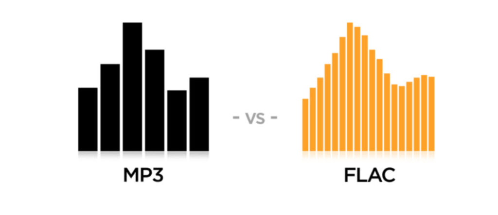

This article contains audio files developed by the Monroe Institute. This session is titled “Positively Ageless”. It is a self-hypnosis session designed to reinvigorate the mind, consciousness, spirit and body. It is narrated and walks the listener into deep hypnosis.
This post contains Hemi-Sync music / audio tracks.
Hemi-Sync is a method of control that uses sounds to center the activity in the brain. When the brain is fully centered, it becomes easier to exist within this reality. Or even more specifically, easier to be able to use your consciousness to control your brain.
The files are FLAC files. Not MP3.
They should play on almost all cell phones and computers. If you have any doubt you can probably download an APP that will allow you to listen to them.
MP3 is the most popular format while FLAC (Free Lossless Audio Codec) is a less known alternative. The main difference between the two is in how they compress the audio information. MP3 is a lossy format where parts of the audio information that people are not likely to hear are discarded. On the other hand, as the name suggests, FLAC is lossless. -Difference Between MP3 and FLAC | DifferenceBetween
Hemi-Sync contains frequencies and audio wavelengths that are traditionally considered as “unnecessary” and thus is often removed using an MP3 format to cut down on the file size. That is why they are in the FLAC format.

This Post
This article consists of four audio files that needs to be listened to in sequence.
You need to do so in a quiet area where you will be undisturbed for one hour. And you need to put on headphones, or ear buds to transmit the sounds directly in a balanced method to your brain. You will need to lie down, or sit up, depending on your preference.
The audio track engages the listener to Hemi-Sync, and gives them an experience that is a type of self-hypnosis. You simply relax and listen to the woman “talk” you into a state of relaxation. For some people they find this particular set of music very relaxing and calming. For others, who prefer an over-wrought mind, find it uncomfortable.
The links will each download a ZIP file. Just place it where you want, and copy the files in order, to the player of your preference. You should listen to them in order in one sitting. It will be around a half and hour of listening.
This is an introductory post to give you an idea of how the brain / consciousness centering activity works.
Positively Ageless (Full Package)
These files tend to be large, so I would suggest downloading them one at a time. Otherwise you might have your browser crash or go *tilt*.
Each exercise is a “stand alone” session. They typically last around 40 minutes or so. It starts by walking you into a trance, then performing the functional task at hand, and then walking you up and out of the trance. I would imagine that you might want to perform one exercise one day, and then the next one the day after that. It’s all up to you.
- 01 – Exercise 1 ; Rejuvenation
- 02 – Exercise 2 ; Reconditioning
- 03 – Exercise 3 ; Lightbody
- 04 – Exercise 4 ; Clear and Balanced
- 05 – Exercise 5 ; Renew Through H-Plus
The files
This is the instruction booklet that comes with the five files. It tells you what the “Positively Ageless” session is supposed to accomplish, and how best to listen and perform the associated exercises with it. It is a fundamental component to the five audio tracts listed above.
Important note
This particular singular file is a nice “kit” that you listen to to relax and settle your soul. It is perfect for undoing the noise, the “news” and the hassles of daily life. It serves as a “reset button” role in re-centering the position of your consciousness within your brain. It is an absolute necessity if you really want your affirmation prayers to work efficiently.
You need to lie down to maximize the effect, and you need to wear headphones or ear-buds for the effect to manifest. You just cannot simply have it playing as noise in the background. It will not work that way. The ONLY way that this will work is if you are wearing headphones (ear buds), and lying down on the bed.
Do you want more?
I have more posts in my Hemi-Sync Sub-Index here;
Articles & Links
You’ll not find any big banners or popups here talking about cookies and privacy notices. There are no ads on this site (aside from the hosting ads – a necessary evil). Functionally and fundamentally, I just don’t make money off of this blog. It is NOT monetized. Finally, I don’t track you because I just don’t care to.
To go to the MAIN Index;
- You can start reading the articles by going HERE.
- You can visit the Index Page HERE to explore by article subject.
- You can also ask the author some questions. You can go HERE .
- You can find out more about the author HERE.
- If you have concerns or complaints, you can go HERE.
- If you want to make a donation, you can go HERE.
Please kindly help me out in this effort. There is a lot of effort that goes into this disclosure. I could use all the financial support that anyone could provide. Thank you very much.